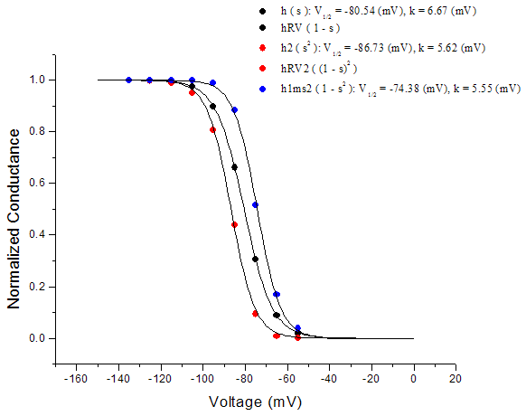
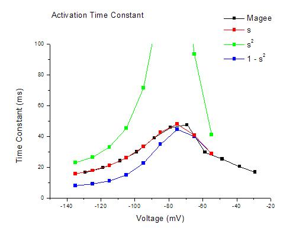
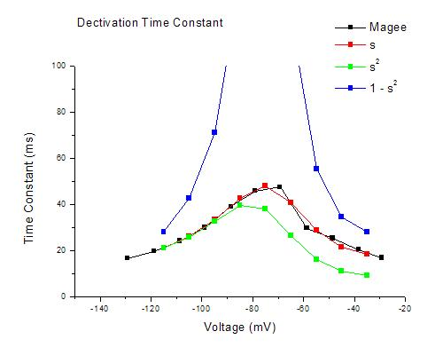

|  |
Comparison: s2 shifts the curve to the left. (1 - s2) shifts the curve to the right. |
| s (control) | s2 | 1 - s2 |
|
gbar_h = 5.3e-5 (S/cm2) vhalf = -80.5 (mV) k = 6.7 (mV) |
gbar_h = 6.7e-5 (S/cm2) vhalf = -73.05 (mV) k = 7.97 (mV) |
gbar_h = 4.6e-5 (S/cm2) vhalf = -87.95 (mV) k = -7.97 (mV) |
|
Tau = 24.34 (ms) Rin = 44.51 (MΩ) Sag = 21.47 (%) Temporal Summation = 7.31 (%) Depolarizing Resonance Frequency = 4.2 (Hz) Hyperpolarizing Resonance Frequency = 4.8 (Hz) |
Tau = 24.30 (ms) Rin = 38.37 (MΩ) Sag = 28.64 (%) Temporal Summation = 1.61 (%) Depolarizing Resonance Frequency = 4.9 (Hz) Hyperpolarizing Resonance Frequency = 5.4 (Hz) |
Tau = 24.41 (ms) Rin = 48.03 (MΩ) Sag = 18.35 (%) Temporal Summation = 10.13 (%) Depolarizing Resonance Frequency = 3.7 (Hz) Hyperpolarizing Resonance Frequency = 4.5 (Hz) |
Activation Tau

Deactivation Tau

The results of time constants are not satisfactory.